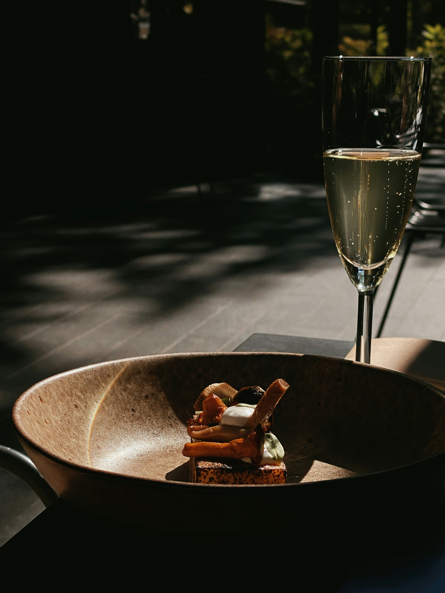
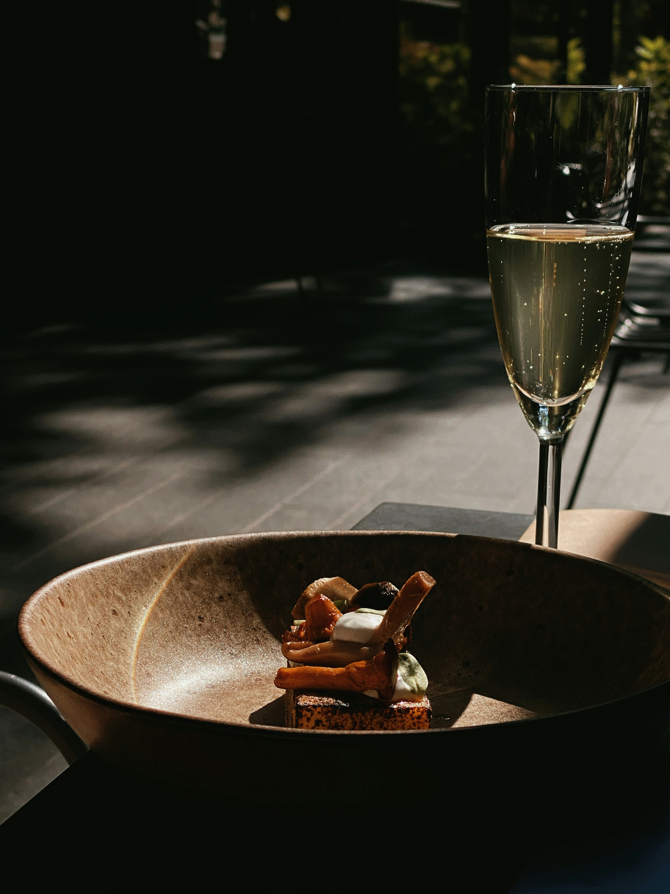

The Velvet Fork
Welcome to The Velvet Fork, where the ambiance is as rich as the flavors. Indulge in a culinary experience like no other, surrounded by warm, ambient lighting and elegant décor that sets the stage for unforgettable moments. Whether you're savoring a romantic dinner or enjoying a night out with friends, our carefully crafted dishes and sophisticated atmosphere promise to leave you wanting more. Discover the perfect blend of luxury and comfort at The Velvet Fork.
 
